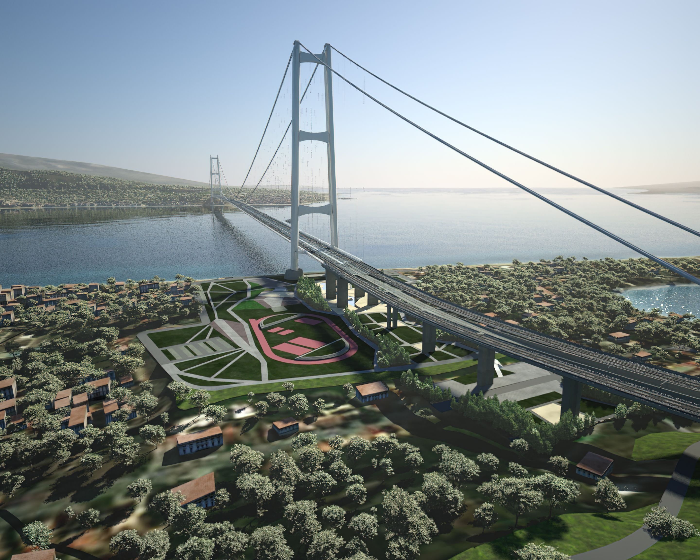

Messina Strait
|

|
Cieśnina Mesyńska – cieśnina łącząca wody Morza Tyrreńskiego i Morza Jońskiego,
oddziela Sycylię od Kalabrii na południowym krańcu Półwyspu Apenińskiego. W najwęższym
miejscu mierzy 3,1 km. Maksymalna głębokość cieśniny wynosi 250 m. Działa połączenie
promowe między Mesyną a kalabryjskim miastem Villa San Giovanni.
|
Sunda Strait
|
|
Cieśnina Sundajska, Sunda – cieśnina morska między zachodnią Jawą i wschodnią Sumatrą w
Indonezji. Za jej pośrednictwem Morze Jawajskie łączy się Oceanem Indyjskim. Podstawowe
dane: długość: ok. 125 km szerokość: 22–112 km głębokość: 50–1080 m.
|
Akashi Kaikyo
|
|
Most Akashi Kaikyō – most wiszący przebiegający od miasta Kōbe na wyspie Honsiu, aż do
wyspy Awaji znajdującej się na terenie Morza Wewnętrznego. Most ten stanowi część
autostrady krajowej numer 28. Do 2022 roku był najdłuższym i najdroższym mostem na
świecie kiedy to wyprzedził go turecki Most Çanakkale 1915.
|
Izmit Bay
|
|
Most Osmangazi to most wiszący obejmujący Zatokę Izmit w jej najwęższym punkcie, 2620 m.
Most łączy tureckie miasto Gebze z prowincją Yalova i prowadzi przez zatokę autostradę O-5.
|
Xihoumen
|

|
Most Xihoumen to most wiszący na Archipelagu Zhoushan, największej grupie wysp przybrzeżnych
w Chinach.
|
Great Belt
|
|
Wielki Bełt – cieśnina na Morzu Bałtyckim, położona między duńskimi wyspami Fionią i Langeland a
Zelandią i Lolland. Jest największą z trzech Cieśnin Bałtyckich, łączących Morze Bałtyckie z
Kattegatem. Długość cieśniny to około 120 km, szerokość w najwęższym miejscu 11 km,
a głębokość 12–58 m.
|